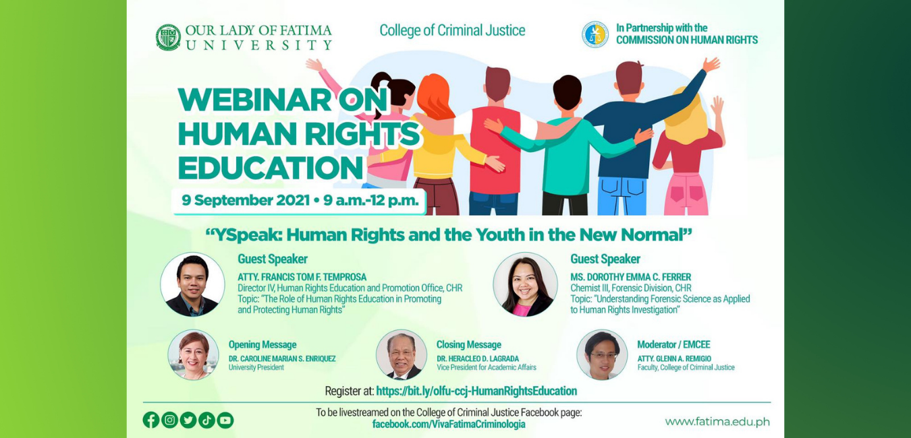

August 17, 2021
The Our Lady of Fatima University College of Criminal Justice (OLFU CCJ), in partnership with the Commission on Human Rights (CHR), conducted a webinar on Human Rights Education last 09 September 2021 with the theme, "YSpeak: Human Rights and Youth in the New Normal". Gracing the event were the University President, Dr. Caroline Marian S. Enriquez, who delivered the opening message, and the Vice President for Academic Affairs, Dr. Heracleo D. Lagrada, who synthesized the webinar discussions in his closing remarks.
Giving a baseline to the conference, the moderator, Atty. Glenn A. Remigio, introduced the rhyme and reason of CHR which is best demonstrated by their slogan, "Dignity to all". The agency, he narrated, was "created under the 1987 Philippine Constitution as a response to the atrocities committed during Martial Law". Hence, the driving force of CHR is to "investigate violations on human rights against marginalized and vulnerable sectors of the society involving civil and political rights".
"The State must always respect human rights, protect and fulfill our rights," underscored OLFU University President, Dr. Caroline Marian S. Enriquez, in consonance with Atty. Remigio's introduction. She added that while it is government's mandate to uphold human rights, it is also upon each person to have "equal respect for the rights of others", and that humanity must "help each other to protect each other's rights".
Invited speakers from the Commission were Atty. Francis Tom F. Temprosa, Director IV, Human Rights Education and Promotion Office, and Ms. Dorothy Emma C. Ferrer, Chemist III of the Forensic Division. The first speaker discussed "The Role of Human Rights Education in Promoting and Protecting Human Rights", while the second speaker talked about "Understanding Forensic Science as Applied to Human Rights Investigation".
The Role of Human Rights Education in Promoting and Protecting Human Rights
Atty. Temprosa reminded the audience of a most important point- that "human rights are inherent to the person," and, hence, cannot be denied that person because he/she has those basic human rights from birth. And while those are inherent in each person, it is government's obligation to uphold those rights and see these to fruition.
He defined some human rights such as the right to life, food, housing, health, education, work, equal protection of the law, fair trial, political participation, and freedom of thought
Using these as a springboard towards emphasizing the important role of education in protecting human rights. Being well-informed about human rights, Atty. Temprosa explained, prevents abuses, promotes good governance, opens access to solutions, among others. For students, understanding human rights helps them for their future life as employees.
Atty. Temprosa then spoke of the United Nation's move to better integrate Human Rights Education and Training and how higher educational institutions become pivotal here by integrating human rights education/training into their policies, teaching processes/tools, research, the learning environment, and the education and professional development of its faculty.
Citing a study made on Human Rights Education (HRE), Atty. Temprosa revealed that HRE in schools is still at the superficial, "appreciation level", and that there were more areas wherein HRE could be integrated such as subject matter on Gender and Development and Violence Against Women and Children, and more. But, positively, Atty. Temprosa cited the best practices that CHR managed to institutionalize which include the establishment of Centers for Human Rights in universities, and the inclusion of HRE as mandatory courses in the Armed Forces of the Philippines (AFP) and the Philippine National Police (PNP). He likewise lauded the support of HRE stakeholders coming from the Department of Education, the Commission on Higher Education, the Philippine Public Safety College, the National Defense College of the Philippines, the AFP, and the PNP. Ending his talk, Atty. Temprosa listed some of the issues around HRE like the need to take Human Rights beyond its "appreciation level", correcting misconceptions about human rights, limited teaching materials, and the COVID 19 to name a few; but presented recommendations, on the other hand, to navigate these challenges.
Understanding Forensic Science as Applied to Human Rights Investigation
In laying down the foundation to her talk, guest speaker, Ms. Dorothy Emma C. Ferrer, began with defining "forensic science" as the "application of scientific knowledge and techniques to answer questions related to the law", and that the fields of forensic science are rooted in the concepts of being "humanitarian" and performing "humanitarian acts"; these being inherent in forensics.
As an example, Ms. Ferrer said that exercising maximum effort in identifying a body through the various processes and tools of forensic science would help in restoring the deceased person's dignity and provide some measure of comfort to that person's family and loved ones as it will answer some nagging questions, and allow them to make preparations about moving on by making burial arrangements and grieving. In another scenario, forensic evidence and information can ease the suffering of a rape victim because he/she need not relive the experience over and over during the investigation or during a court trial.
In upholding human rights in forensic science, Ms. Ferrer said that there are humanitarian needs and investigative needs. The first involves more about alleviating the suffering of the next of kin, protecting the dignity of the dead, and management of the dead; while the latter deals with documenting and gathering evidence, determining accountability, stopping the abuse, and obtaining justice.
Citing the historical beginnings of forensic science, Ms. Ferrer also tackled the historic, significant events that furthered the practice of humanitarian forensic science. The story about the Grandmothers of Plaza de Mayo in Argentina led to the formation of the Argentine Forensic Anthropology Team in 1987, and the world's first forensic genetic data bank in 1987. Ms. Ferrer also cited the establishment of International Humanitarian Laws as a turning point in forensic science. Such was a precursor to the United Nation's development of manuals and guidelines from 1989 and onwards, dealing with the prevention of unlawful executions, massacres, and tortures across different geographies. And in 1992, the UN Commission on Human Rights (UNCHR) adopted the first resolution on human rights and forensic science. These are but a few of critical events that pushed the promotion of human rights through forensic science.
In Forensic Human Rights Investigation, Ms. Ferrer avers that the first question to be asked is what the purpose of the investigation is. Afterwards, priorities are set wherein resources are determined and made available. What weighs more- the humanitarian needs or the investigative needs?
Majority of the participants were criminology and forensic science students coming from OLFU and other HEls including the University of Caloocan City, Wesleyan University, Holy Angel University, De La Salle University, Lyceum of the Philippines University, Adamson University, St. Peter's College of Iligan City, Dominican College of Tarlac, Bestlink College, University of Pangasinan (PHINMA), Philippine Law School, System Plus College, STI, EARIST, Don Honorio Ventura State College, and CICOSAT of La Union. Deans and faculty members were among the attendees, as well as representatives from the Commission on Human Rights, the Philippine National Police, the Bureau of Jail Management and Penology, the Department of Education, and the Philippine Navy. There were 787 registrants who joined via Zoom, 7,427 viewers in the live stream, and 4,106 recorded engagements.
OLFU's Vice President of Academic Affairs, Dr. Heracleo D. Lagrada, recapped the most salient points of the conference and did the honor of closing the event.
The organizers were composed of the CCJ program heads led by its Dean, Dr. Zorobabel S. Laureles, who worked hand-in-hand with the CHR contact person, Dr. Jerrick Gerard C. Go, Chief, Education and Training Division. The success of the activity was made possible by the collaborative support extended by the different departments including the ELITE Center, the Research Development and Innovation Center, the Office of Marketing and Communications, and the Center for Professional Development and Academic Partnership.
Rise to the top!